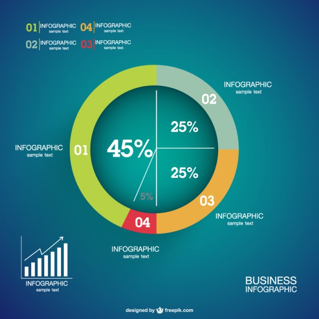
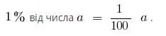
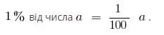

Позначення: Відсотком (процентом) називається сота частина цілого.

Найбільш поширені задачі на відсотки

Найбільш поширені задачі на відсотки
- Знайти відсоток від заданого числа
- Знайти число по заданому іншому числу і його величині в відсотках від початкового числа
- Знайти число по заданому відсотку
- Знайти відсотковий вираз одного числа від іншого.
- Знайти відсоткове відношення двох чисел
- Знайти складні відсотки.
- На скільки відсотків одне число більше (менше) іншого числа